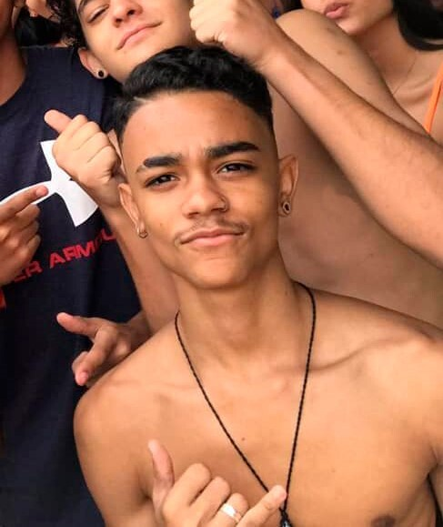

Lucas Augusto Arcebispo Ferreira
Vim da terra do pao de quejo, no estado de Minas Gerais, na cidade de Belo Horizonte
Quando nos tratamos de habilidade e sempre muito complicado atingirmos essa parte interior para falarmos quais sao as nossas qualidades.
Mas ainda sim precisamos ter esse autoconhecimento que todos temos habilidades.
Enfim, acredito que a minha melhor habilidade seja trabalhar em grupo, sempre me dei muito bem em fazer novos amigos, gosto bastante de conversar, e de aprender com as pessoas coisas novas, principalmente suas cultura e costumes quando essas pessoas vivem de distante da minha realidade.
Um site que eu gosto bastante, por diversos motivos, e o site do jovem nerd, seja seu canal de noticias, seus podcast e outras coisas que a rede Jovem Nerd tem a oferecer.
Jovem nerd